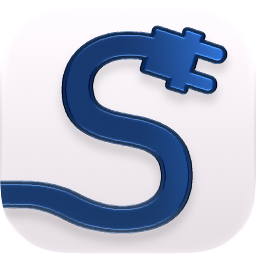

Jokainen latauspiste Suomessa. Yksi kartta.
Näe, mikä laturi on vapaana, paljonko lataus maksaa ja missä kannattaa pysähtyä matkalla. Emme myy latausta, vaan selkeyttä — ilman mainoksia ja kymmentä eri sovellusta.
Tulossa pian App Storeen
iPhone · suomeksi

- 3 700+latausasemaa
- 20 000+latauspistettä
- Reaaliajassavirallinen AFIR-data